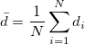
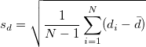
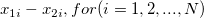

Rohdaten
- Geben Sie die Spalte mit Bereichsformat ein. Hilfe zum Festlegen von Bereichen finden Sie hier: Eingabedaten festlegen
Zusammengefasste Daten
- Geben Sie den Wert von Mittelwertdifferenz, gepoolter Standardabweichung und Stichprobenumfangsdaten für Stichprobe(n) gemäß der Form "Mittelwert Std.Abw. N" (durch Leerzeichen getrennte Zahlen) ein.
- Sie können die Mittelwertdifferenz folgendermaßen berechnen:

- Die Std.Abw. wird berechnet mit:

- N ist der Stichprobenumfang.
 ist
ist 
.
Geben Sie die Eingabedaten ein.
 )%. Diese Option ist verfügbar, wenn Konfidenzintervall(e) aktiviert wird.
)%. Diese Option ist verfügbar, wenn Konfidenzintervall(e) aktiviert wird.